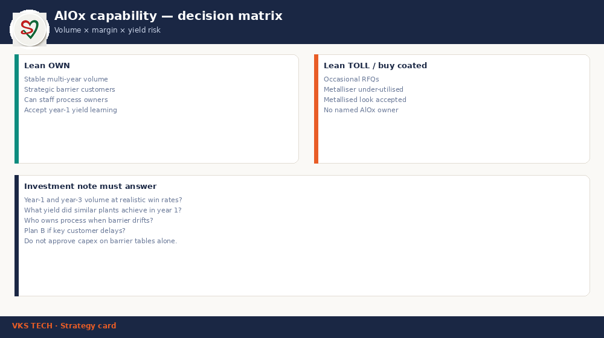

🧭 AlOx Capability Decision — When to Invest (Not Just Compare)
📖 12-min read · Plant strategy · For plant heads & commercial
Barrier comparison tables (AlOx vs metallised PET) answer “what can the film do.” This post answers a different question: should your plant own AlOx capability, toll it, or stay metallised-first? Volume, yield risk, and process ownership decide — not only OTR numbers.
- Demand-first: multi-year volume at realistic win rates
- Capability = process + yield, not only a coater on the floor
- Own vs toll matrix before capex slides
- Year-1 yield honesty — learning curves are real

1. Lean OWN when
- Stable multi-year AlOx volume with named customers
- Strategic specs require transparent high barrier
- You can staff process engineering ownership
- Board accepts year-1 yield learning
2. Lean TOLL / buy coated when
- Occasional RFQs, uncertain volume
- Metalliser still under-utilised
- Customers accept metallised optics
- No named process owner for AlOx
3. Investment note must answer
- Year-1 and year-3 volume at realistic win rates?
- What yield did similar plants see in year 1?
- Who owns process when barrier/OD drifts?
- Plan B if key customer delays?
Do not approve capex on barrier tables alone. Cross-read AlOx vs metallised PET comparison for material facts.
🧭 AlOx क्षमता का निर्णय — कब निवेश करें (सिर्फ तुलना नहीं)
📖 12 मिनट · प्लांट रणनीति · प्लांट हेड और कमर्शियल के लिए
बैरियर तुलना टेबल (AlOx बनाम मेटलाइज़्ड PET) बताती हैं “फिल्म क्या कर सकती है।” यह पोस्ट अलग सवाल पूछती है: क्या आपके प्लांट को AlOx क्षमता खुद रखनी चाहिए, टोल करनी चाहिए, या मेटलाइज़्ड-फर्स्ट रहना चाहिए? वॉल्यूम, यील्ड रिस्क और प्रोसेस ओनरशिप तय करते हैं — सिर्फ OTR नंबर नहीं।
- डिमांड-फर्स्ट: यथार्थ विं रेट पर मल्टी-ईयर वॉल्यूम
- क्षमता = प्रोसेस + यील्ड, सिर्फ फ्लोर पर कोटर नहीं
- ओन बनाम टोल मैट्रिक्स कैपेक्स स्लाइड से पहले
- ईयर-1 यील्ड ईमानदारी — लर्निंग कर्व असली है
1. OWN की ओर झुकें जब
- नामित ग्राहकों के साथ स्थिर मल्टी-ईयर AlOx वॉल्यूम
- रणनीतिक स्पेक पारदर्शी हाई बैरियर माँगें
- प्रोसेस इंजीनियरिंग ओनरशिप स्टाफ कर सकें
- बोर्ड ईयर-1 यील्ड लर्निंग स्वीकार करे
2. TOLL / कोटेड खरीद की ओर जब
- कभी-कभार RFQ, अनिश्चित वॉल्यूम
- मेटलाइज़र अभी अंडर-यूटिलाइज़्ड
- ग्राहक मेटलाइज़्ड ऑप्टिक्स स्वीकार करें
- AlOx के लिए नामित प्रोसेस ओनर नहीं
3. निवेश नोट में जवाब हों
- यथार्थ विं रेट पर ईयर-1 और ईयर-3 वॉल्यूम?
- समान प्लांटों ने ईयर-1 में क्या यील्ड देखा?
- बैरियर/OD ड्रिफ्ट पर प्रोसेस का मालिक कौन?
- की कस्टमर देरी पर प्लान B?
सिर्फ बैरियर टेबल पर कैपेक्स मंज़ूर न करें। सामग्री तथ्यों के लिए AlOx बनाम मेटलाइज़्ड PET तुलना क्रॉस-रीड करें।